La renuncia del Gobierno de Caracas a acatar el fallo del Tribunal Andino de Justicia que declaró ilegal la decisión que Venezuela adoptó para restringir el transporte internacional de carga por carretera , podría llevar a Colombia , en dos meses , a adoptar medidas contra los productos venezolanos.

El anuncio fue hecho hoy , Lunes , por la ministra de Comercio Exterior de Colombia , Marta Lucía Ramírez , quien señaló que su país esperará los 90 días con los que cuenta Venezuela para acatar el fallo del máximo tribunal regional , que vence a mediados de noviembre.
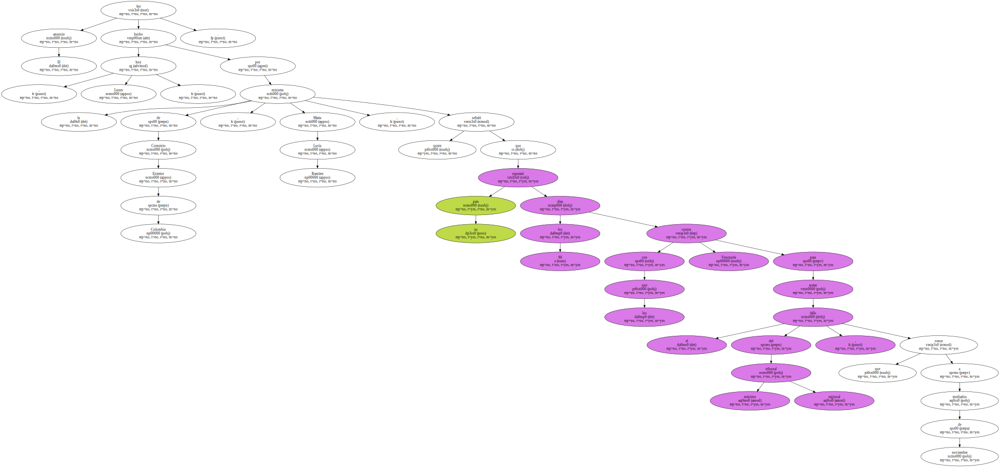El Tribunal conminó a Venezuela a suspender el transbordo de mercancías en la frontera con Colombia , que impuso unilateralmente Caracas desde mayo de 1999 y que ha afectado el comercio entre los dos países.
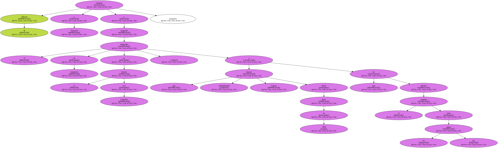El vicepresidente de Venezuela , Isaías Rodríguez , anunció que su Gobierno incumplirá la sentencia del Tribunal , recordó Ramírez.
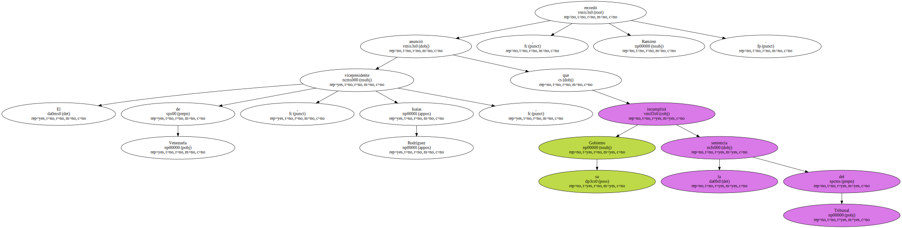" Vamos a esperar que transcurran estos sesenta días . Anticiparnos a hablar de sanciones es inconveniente . Nosotros no hemos querido que este sea el escenario en que se mueva nuestra relación con Venezuela " , dijo la ministra.
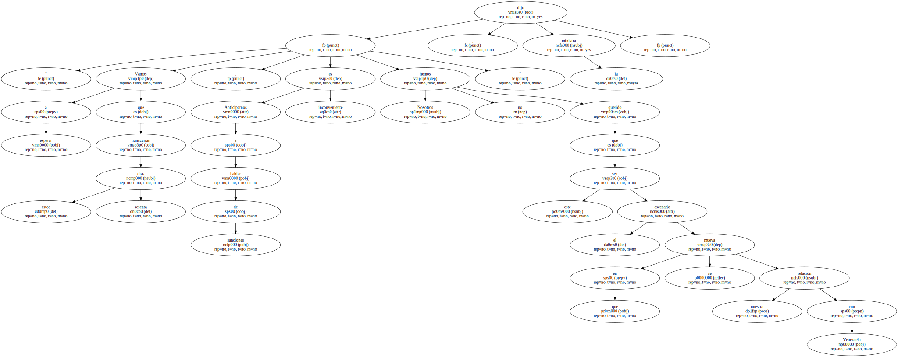Ramírez advirtió que " si vencido el tiempo no se acata ( el fallo ) por parte del país que está violando la norma , el Tribunal nos da derecho a aplicarle restricciones comerciales como , por ejemplo , la imposición de aranceles ".
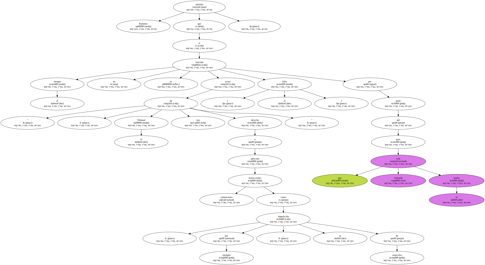En el primer semestre de este año Colombia vendió a Venezuela , que es su segundo socio comercial después de EEUU , 569,9 millones de dólares ( FOB ) , un 37 por ciento más que en igual período de 1999 , y efectuó importaciones de productos venezolanos por 416,1 millones de dólares , un 15 por ciento más que en el primer semestre del año pasado.
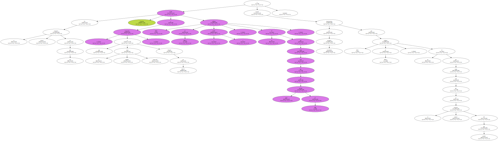Venezuela argumentó , para la adopción de las medidas , la inseguridad a la que están expuestos los transportistas en Colombia causada por la guerrilla , el narcotráfico y los paramilitares.
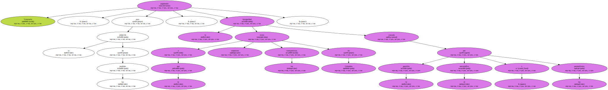" Lamentamos que la guerrilla colombiana le esté dando argumentos al gobierno de Venezuela para no aplicar una disposición a la que está obligado . Lo sucedido no es más que un pretexto para mantener el incumplimiento que , en todo caso , no ha dado señales de querer corregir " , comentó Ramírez.
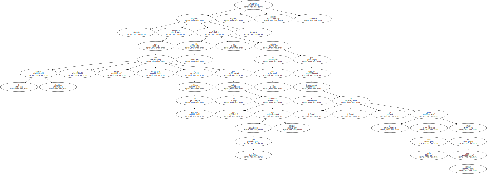La funcionaria lamentó el asesinato , la semana pasada , de un conductor venezolano y el incendio de su vehículo en territorio colombiano en un hecho que fue atribuido a rebeldes del Ejército de Liberación Nacional ( ELN ).
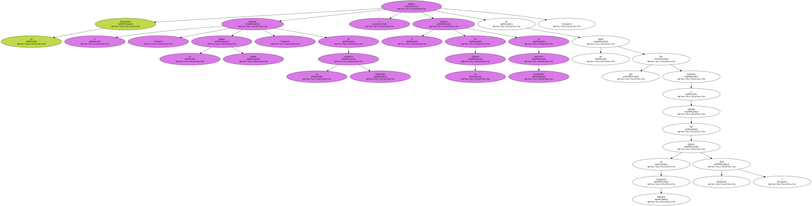La representante colombiana ante la comisión de la Comunidad Andina ( CAN ) solicitó al Gobierno de Venezuela una reunión para tratar el tema en el marco de la sesión de la Comisión , que se lleva a cabo esta semana en Lima , para " un diálogo que permita acuerdos sobre una controversia que no trae beneficios a nadie ".
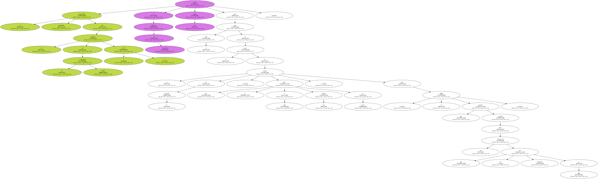Sobre la posibilidad de que Caracas proponga una reforma a las normas sobre transporte fronterizo , Ramírez fue enfática en señalar que su país no la acompañará , pues de lo que se trata no es de " solucionar el incumplimiento modificando la norma , sino acatando la normatividad vigente ".

Según Colombia los argumentos de Venezuela no son admisibles porque " ello significaría la posibilidad de que los países miembros de la CAN ignoren las decisiones de los órganos encargados de dirimir las controversias en la sub-región " y puedan adoptar medidas unilaterales , poniendo en riesgo la estabilidad de las instituciones.
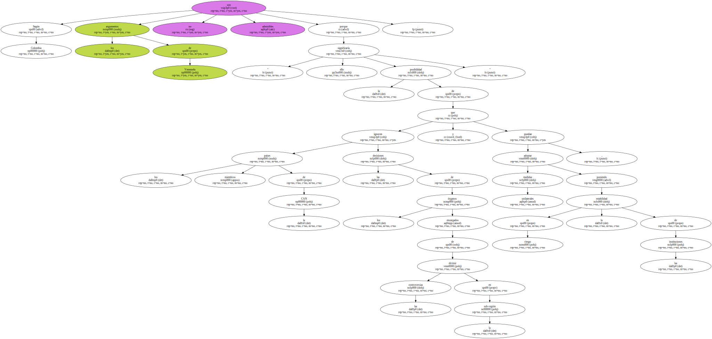Tanto la Secretaría de la CAN , que dirige el venezolano Sebastián Alegrett , como el Tribunal Andino , dieron a Colombia la razón en su demanda para que Venezuela levantara la restricción a la libre prestación del servicio de transporte adoptada por los ministerios del Interior , Hacienda , Industria y Comercio , Transporte y Comunicaciones de Venezuela.
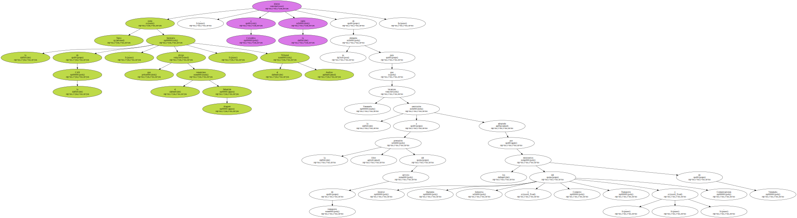